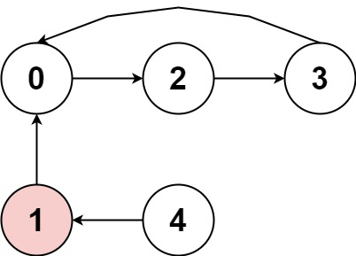
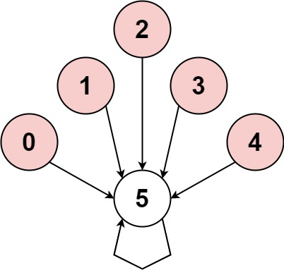
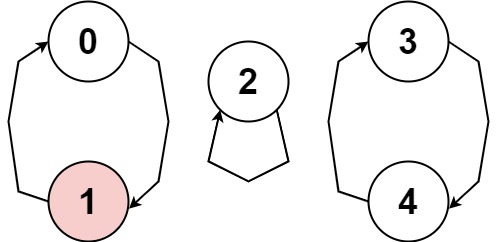

457. 环形数组是否存在循环
沿「i + nums[i] 取模」走链：同向且非自环才继续，走回本轮标记过的点即有环；走过的点打标记防重扫。
思路
- 每个点的「下一步」固定：
next = ((i + nums[i]) % n + n) % n，所以链要么进环要么断掉。 - 合法循环要求环上符号全同：
nums[next]与起点反向、或next == cur（自环，k > 1不满足）就断。 - 走回本轮标记过的点 → 有环；走进之前轮次走过的点 → 直接停：能走进它的链方向必然相同，那条路已经探完，不会漏环。
tag[i]记「第几轮走过」，每个点最多走一次，整体 O(n)。
图解
最优解
1class Solution {2 public boolean circularArrayLoop(int[] nums) {3 int n = nums.length;4 // tag[i]：i 在第几轮被走过（0 表示没走过），走过的点不再重扫5 int[] tag = new int[n];6 for (int i = 0; i < n; i++) {7 if (tag[i] != 0) continue;8 int cur = i;9 while (true) {10 // 环形取模：cur + nums[cur] 可能越界也可能是负数11 int next = ((cur + nums[cur]) % n + n) % n;12 // 与起点反向，或一步走回自己（自环）：这条链废了13 if (nums[next] * nums[i] < 0 || next == cur) break;14 // 走回本轮走过的点：找到环；走进之前轮次的旧路：不用再走15 if (tag[next] == i + 1) return true;16 if (tag[next] != 0) break;17 tag[next] = i + 1;18 cur = next;19 }20 }21 return false;22 }23}题目
存在一个不含 0 的 环形 数组 nums ，每个 nums[i] 都表示位于下标 i 的角色应该向前或向后移动的下标个数：
- 如果
nums[i]是正数，向前（下标递增方向）移动nums[i]步 - 如果
nums[i]是负数，向后（下标递减方向）移动abs(nums[i])步
因为数组是 环形 的，所以可以假设从最后一个元素向前移动一步会到达第一个元素，而第一个元素向后移动一步会到达最后一个元素。
数组中的 循环 由长度为 k 的下标序列 seq 标识：
- 遵循上述移动规则将导致一组重复下标序列
seq[0] -> seq[1] -> ... -> seq[k - 1] -> seq[0] -> ... - 所有
nums[seq[j]]应当不是 全正 就是 全负 k > 1
如果 nums 中存在循环，返回 true ；否则，返回 false 。
示例 1：

输入：nums = [2,-1,1,2,2] 输出：true 解释：图片展示了节点间如何连接。白色节点向前跳跃，而红色节点向后跳跃。 我们可以看到存在循环，按下标 0 -> 2 -> 3 -> 0 --> ...，并且其中的所有节点都是白色（以相同方向跳跃）。
示例 2：

输入：nums = [-1,-2,-3,-4,-5,6] 输出：false 解释：图片展示了节点间如何连接。白色节点向前跳跃，而红色节点向后跳跃。 唯一的循环长度为 1，所以返回 false。
示例 3：

输入：nums = [1,-1,5,1,4] 输出：true 解释：图片展示了节点间如何连接。白色节点向前跳跃，而红色节点向后跳跃。 我们可以看到存在循环，按下标 0 --> 1 --> 0 --> ...，当它的大小大于 1 时，它有一个向前跳的节点和一个向后跳的节点，所以 它不是一个循环。 我们可以看到存在循环，按下标 3 --> 4 --> 3 --> ...，并且其中的所有节点都是白色（以相同方向跳跃）。
提示：
1 <= nums.length <= 5000-1000 <= nums[i] <= 1000nums[i] != 0
进阶：你能设计一个时间复杂度为 O(n) 且额外空间复杂度为 O(1) 的算法吗？
题面取自力扣当前版本。
数据快照 2026-11-04。题面版权归力扣所有，本站点仅供本人学习使用，请勿对外发布。